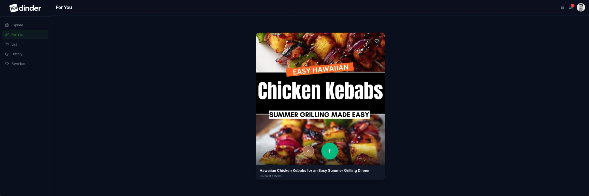
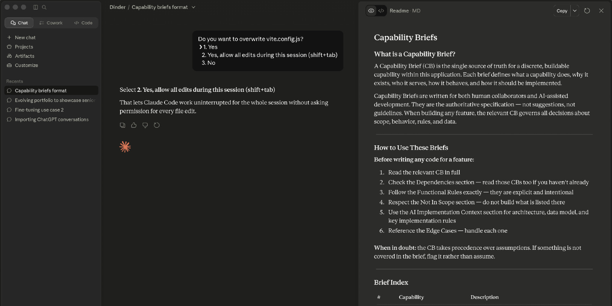
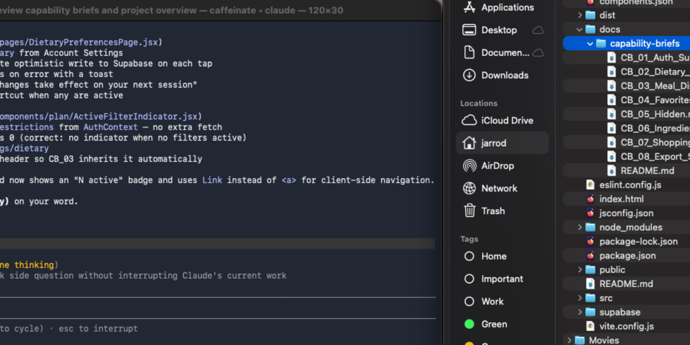
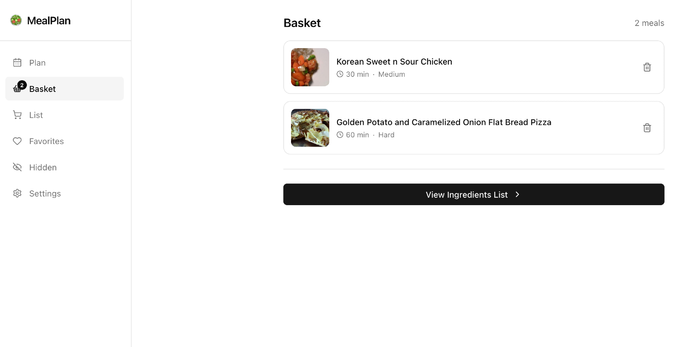
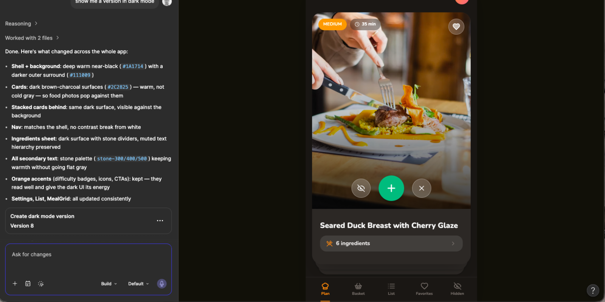
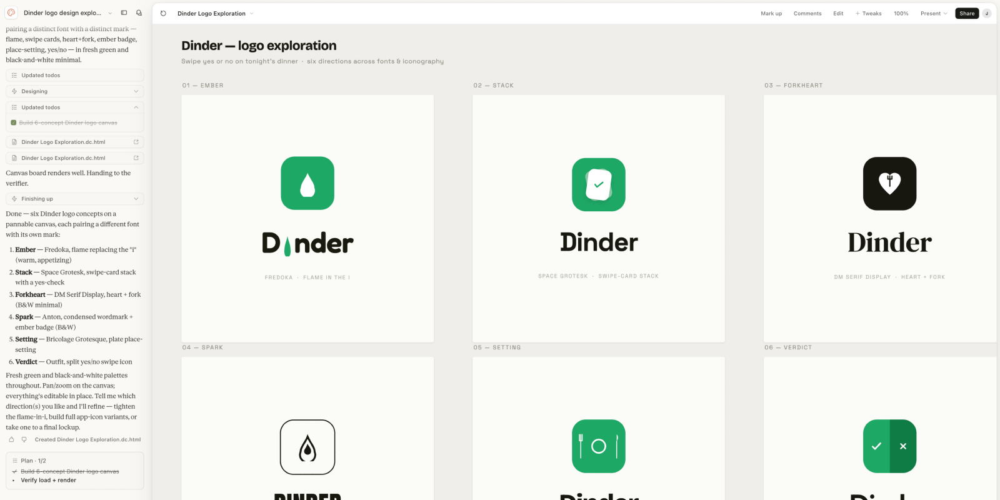
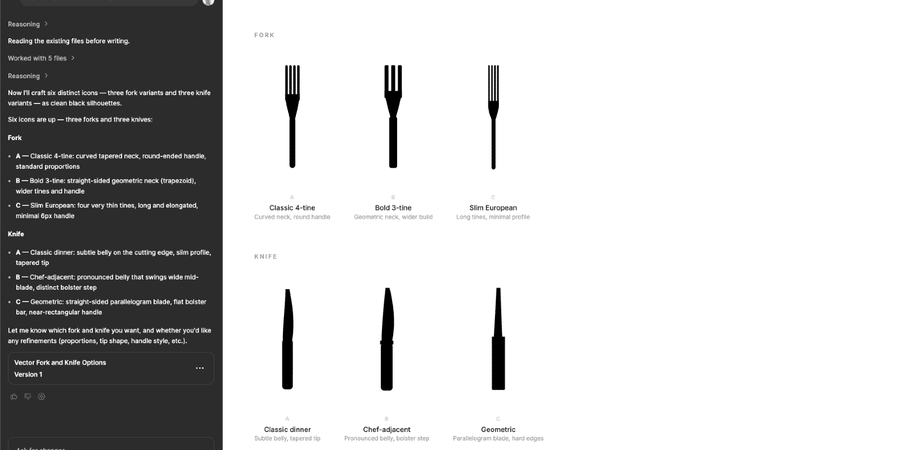
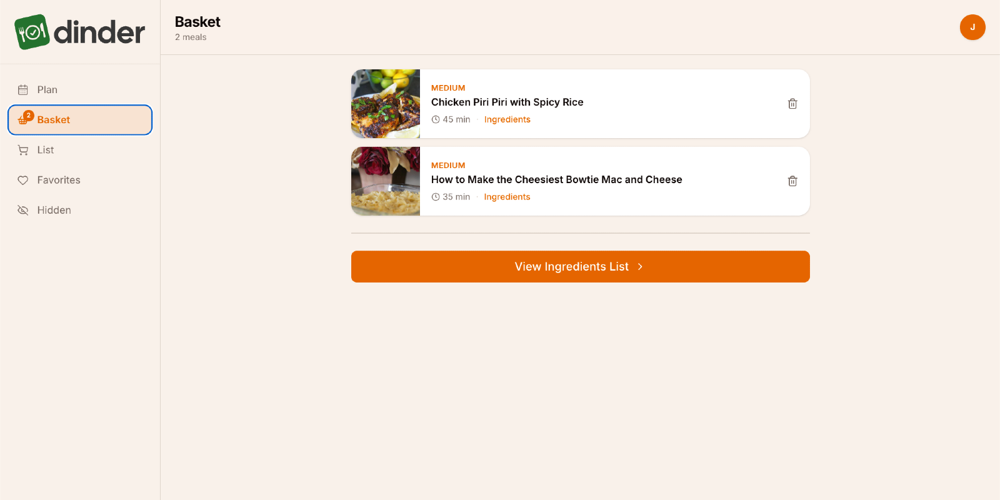

Dinner Meets Tinder
What one person can build with AI
The Challenge
Every week, my wife and I have the same conversation. “What do you want for dinner this week?” “I don’t know, what do you want?” It’s not a big problem. But it’s a persistent one… and the kind of persistent, low-grade friction that a product person can’t stop thinking about. I wanted to solve it. And I wanted to prove something to myself in the process: that I could take an idea from concept to deployed application, alone, using AI as my development partner.
Role
I was the Product Owner, the UX Designer, the Researcher, and the person writing specs for an AI to build from. This project was a deliberate attempt to learn AI-assisted development by doing it… and to walk away with something real to show for it.
Un Understand
Dinner + Tinder
The idea came to me pretty fast. What if picking meals for the week felt less like a chore and more like scrolling through a dating app? I’ve never had a Tinder account, but everyone knows the concept. You see something, you swipe. Yes. No. Next. That simplicity was exactly what I was after. Two people, one app, swipe through meal ideas until you’ve got a week’s worth of dinners… then let the app figure out the grocery list.
I called it Dinder. Dinner + Tinder.
The concept clicked because it solved the real problem: the decision, not the cooking. The hard part was never knowing how to make dinner… it was agreeing on what to make. A swipe-based interface turns that negotiation into something almost fun. Dinder also has a third option that Tinder doesn’t… “I never want to see this meal again.” Every household needs that button.
Why Now
Before AI-assisted development, I couldn’t have built this. A full-stack PWA with authentication, a third-party recipe API, real-time ingredient aggregation, and a shopping list that syncs across devices… that was always a team effort. Or it required a level of engineering depth I didn’t have.
AI changed the math. Not because it replaced the thinking… but because it extended what one person with the right thinking could actually ship.
Si Simplify
Lock the Decisions First
Before writing a single line of spec, I ran a structured Q&A process with Claude to lock every product decision. Not wireframes. Not a backlog. Just questions and answers, one decision at a time.
How do two people share the account? What happens when a meal gets dismissed permanently… is that per-user or per-household? When the swipe deck runs out, does it loop or reset? How smart does ingredient combining need to be? Should half a cup of chicken broth from one recipe and two cups from another combine into a single line item on the shopping list?
That process surfaced decisions that would have caused rework mid-build if I’d skipped them. By the time I started writing specifications, the product was already fully defined. The briefs were documenting decisions, not making them.
The Capability Brief
I wrote eight Capability Briefs… structured markdown files that served as the single source of truth for every feature in the app. Each brief covered the problem, the intended outcome, functional rules, edge cases, constraints, and a section written specifically for Claude Code to consume.

AI coding tools are only as good as what you hand them. Feed a vague user story to an AI and you’ll get vague code back. The Capability Brief format was my answer to that problem… structured, explicit, unambiguous. Written for a collaborator that reads everything literally and builds exactly what you describe. Not “users can filter by dietary restrictions”… but exactly which restrictions, how they get passed to the Spoonacular API, what happens when no results come back, and what’s explicitly out of scope. That last part — the not-in-scope list — turned out to be just as important as the feature list. AI builds confidently in whatever direction you point it. A clear boundary is as valuable as a clear requirement.
The briefs covered everything from authentication and subscription tiers to the three-state swipe logic, ingredient aggregation with unit normalization and serving size scaling, a household default serving size you can override per meal, shopping list persistence, and a copy-to-clipboard export that works for pasting into a grocery app, reading aloud to Alexa, or just texting your spouse what to grab.
The Build
I handed the full set of briefs to Claude Code with one instruction: read everything, confirm your understanding, and ask questions before touching any code. It came back with four clarifying questions. All good ones. We resolved them and started building in dependency order… authentication first, then dietary preferences, then the swipe deck, and so on.

The stack was chosen for documentation and community support. React, Vite, Supabase, Stripe, Spoonacular API, shadcn/ui, Tailwind, react-spring. Every technical decision was made in the briefs before implementation began. Claude Code handled the rest.
Honestly, it came together faster than I thought it would.
Al Align
Two Tools, One App
Once the app was working, I started asking harder questions about the design. Claude Code got me most of the way there… layout, navigation, component structure. The bones were good. The personality wasn’t there yet.

I decided to compare tools. I gave Figma Make the same brief: here’s the tech stack, here’s what I want to change (settings should live behind the user avatar, not in two places; the shopping list icon shouldn’t compete with the basket). Figma Make took more design freedoms than Claude Code did. Where Claude Code built conservatively, Figma Make had opinions about typography, spacing, and color. It was less of a code generator and more of a CSS layer — it made the components look better without restructuring what was already working.

Neither tool was right or wrong. They approached the problem differently, and comparing them was part of the learning.
I took what I liked from the Figma exploration and prompted Claude Code to implement the changes. Warmer backgrounds. A more considered color palette with orange and amber as the primary action color. Cards that felt like they belonged in a food app rather than a starter template. The kind of changes that take a working app and make it feel like someone with taste had been involved.
The Logo Moment
It wasn’t until the app was ready to deploy that I turned my attention to the logo. By then I’d been living with "MealPlan App" as the placeholder name long enough to know it needed to go.
I asked Claude Code to generate logo concepts. Six attempts. None of them were good, but I drew inspiration from the fork and knife concept.

I tried Figma Make for icon design. Fork and knife concepts. Also not good.

AI is not replacing designers anytime soon. What it is doing is handling everything else… so designers can spend their time on the decisions that actually require taste. I designed the Dinder logo myself, dropped it in, and suddenly it felt like a real product.

It Ships
The app is live at app.jarrodmurray.com. Google authentication, real recipe data from Spoonacular, smart ingredient aggregation, a persistent shopping list, and a share sheet that works on any device. Built by one person, with AI, from a blank repo to a deployed application.
Some things didn’t make it. Sending the grocery list directly to a shopping cart required paid API integrations that weren’t worth pursuing for a learning project. Facebook SSO got cut… the developer account setup wasn’t worth the return. The AI-powered Premium tier… meal suggestions based on swipe history, condition-aware filtering for things like Gout or Diabetes, natural language meal planning… is designed and documented but waiting for a reason to invest in the infrastructure.
Knowing when to stop is a product decision. The core loop works. The app is genuinely useful. The methodology is proven.
Va Validate
My Problem and Her Problem
I built Dinder to solve my problem. I knew it intimately… I lived it every week. What I skipped was sitting down with my wife before I built anything and asking her what she actually needed. I just built. And v1 works. It solves the weekly decision problem for me every time I open it.
But a working app has a way of surfacing the problems you didn't know to ask about.
What She Actually Wants
My wife used it. She had thoughts.
Dinder shows her meals she’s never seen before. That part she likes. But her version of “what should we make this week?” is more layered than mine. She has close to 200 recipes pinned on Pinterest… things she’s already decided she wants to make someday. Meals she’s cooked before that everyone loved. Ideas she’s been quietly collecting for months. Dinder doesn’t know any of that exists. It’s pulling from a recipe API while her actual list of “yes, that” sits untouched in another app entirely.
That’s the real problem. And it’s a better one than the one I solved.
What’s Next
My product mind went straight to it: what if I could pull her pinned recipes directly into Dinder? Paste a Pinterest board URL, parse the recipes, inject them into the swipe deck alongside the Spoonacular results. Her existing list, finally connected to the weekly planning process.
I don’t know yet if that’s technically possible. But I know how I’d start figuring it out… a Q&A session with Claude, a new Capability Brief, and the same process that got v1 out the door. That’s what v2 looks like.
Meal planning is still the lowlight of my wife’s week. That’s the real success metric. I haven’t hit it yet. But I’m closer than I was… and now I know exactly what to build next.
Takeaways…
Locking decisions upstream before writing a single spec is the most valuable thing I did on this project. The Q&A process that produced the briefs saved more time than the briefs themselves.
Comparing tools taught me something too. Claude Code and Figma Make approach design problems differently. Neither is a replacement for a designer with taste… but together they cover a lot of ground that used to require a team.
And shipping something real matters more than shipping something perfect. My wife has a list of things she wants changed. That’s not a failure. That’s a product.